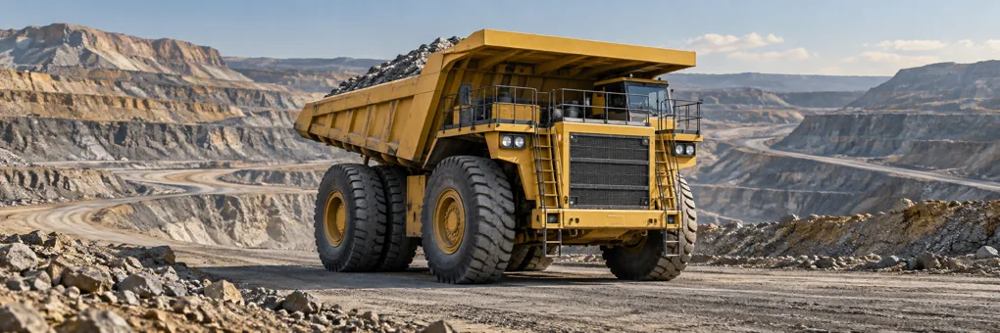

O Miner IA conecta dados abertos e aprendizado de máquina para ajudar a ANM a preparar carteiras, o minerador a investigar oportunidades e o setor a acompanhar resultados.

Antes de usar: de onde vêm os dados e quais são os limites?
Coleta das bases: 24/09/2026. Os dados desta versão são um retrato congelado. A atualização visual do painel não significa nova consulta à ANM. A tentativa de atualização em 25/09/2026 não foi aplicada; a conexão em tempo real não está ativa.
SOPLE · ofertas, resultados e estoque
Áreas incluídas nas rodadas, resultado da oferta, lances vencedores, estoque e registros de interessados. Arquivos: ResultadoRodadaDisponibilidade, EstoqueAreas, ResultadoAvaliacaoSocial e InteressadoParticipante.
Limites: lance não comprova pagamento; estoque apto não garante inclusão no edital. Rodadas 6 (social) e 7 (cancelada) têm tratamento próprio. Nem todos os lances perdedores estão identificados.
Cadastro Mineiro · trajetória administrativa
Microdados de processos, eventos, características e associações, usados para reconstruir históricos e vínculos.
Limites: eventos e associações não certificam, sozinhos, a fase vigente ou a transferência da mesma área. A cobertura histórica varia e os vínculos precisam de conferência documental.
CFEM · arrecadação vinculada ao processo
Arquivos de arrecadação de 2017–2021 e 2022–2026. O acompanhamento apresentado foi limitado a 31/12/2025.
Limites: valores brutos sujeitos à conciliação; ausência de registro não prova ausência de atividade. Uma comparação antes/depois não demonstra efeito causal do leilão.
SIGMINE · localização e poligonais
Cadastros de processos ativos e inativos para localização e geometrias disponíveis na exploração.
Limites: geometria da coleta pode diferir da área do edital. Pontos no mapa são localizações aproximadas, não limites legais.
DIPEM · contexto municipal
Base complementar de investimento em pesquisa mineral por município, coletada em 24/09/2026.
Limites: medida municipal não pode ser atribuída a uma área específica. Sua disponibilidade não significa que tenha sido usada como variável no modelo V5.
Recortes minerais e aprendizado de máquina
Grupos estratégicos baseados na referência SGM/MME 2/2021. Modelo avaliado retrospectivamente nas rodadas informadas em Evidências.
Limites: substância cadastrada não comprova reserva. A lista usada não é apresentada como classificação normativa atual. O modelo não foi validado para selecionar automaticamente o estoque da próxima rodada.
Produto de pesquisa e apoio à análise. Não é serviço oficial da ANM nem substitui edital, conferência técnica ou decisão administrativa.
Como o Miner IA ajuda nos leilões minerais?
O problema: para avaliar uma oportunidade ou preparar um leilão, é preciso reunir informações espalhadas sobre ofertas anteriores, características das áreas, eventos dos processos e resultados posteriores. Um valor de lance isolado não explica se a área merece atenção nem o que ocorreu depois.
O que a ferramenta resolve: reúne esses dados em uma análise navegável, permite comparar áreas e rodadas e mostra onde o aprendizado de máquina acrescentou informação nos testes. Você passa de um resultado agregado aos processos que precisam ser examinados.
ANM · preparar e acompanhar leilões
Pergunta: quais áreas aptas merecem uma análise mais aprofundada para a próxima oferta?
Como usar: compare resultados históricos, delimite o estoque apto e forme uma carteira candidata para revisão.
Entrega: lista de processos para conferir e justificar. O painel não certifica aptidão atual nem decide a inclusão no edital.
Minerador · investigar oportunidades
Pergunta: quais áreas combinam com a substância, localização e perfil de investimento que procuro?
Como usar: explore os processos, seus resultados e históricos; compare os lances de ofertas anteriores.
Entrega: oportunidades para estudo técnico e econômico. O painel não recomenda um lance nem comprova que a área esteja aberta a ofertas agora.
Pergunta: o que foi ofertado, arrematado e como os processos avançaram depois?
Como usar: compare rodadas e acompanhe eventos e CFEM identificados nos processos associados.
Entrega: evidências para acompanhar a política e investigar casos. Avanço administrativo não comprova produção; comparação temporal não demonstra efeito causal do leilão.
Onde a IA ajuda — e onde ainda não ajuda
O modelo foi testado em resultados históricos para ordenar áreas para análise. Os testes mostram ganhos e falhas, comparados com uma regra simples por estado.
Uso atual: avaliar uma hipótese de triagem. Ainda falta validar sua aplicação ao estoque de uma futura rodada; não há recomendação automática de oferta ou estimativa confiável de preço mínimo.
O que mudou de uma rodada para outra?
Clique em uma coluna para filtrar a página; clique novamente para remover. A 6ª (avaliação social) e a 7ª (cancelada) têm zero de contribuição financeira comparável: não houve arrematação por zero reais. Lances não comprovam pagamento.
Destinos das áreas
Arrematada: lance vencedor. Conquistada: destinação sem disputa financeira. Livre: resultado registrado na rodada. Consulte a ficha antes de inferir a situação atual.
Entenda as ofertas anterioresCompare rodadas e substâncias. Separe o valor dos lances do dinheiro efetivamente recolhido.
2
Direcione a análisePara uma próxima rodada, examine o estoque apto em Planejar uma carteira. Para avaliar a IA, use Testar modelo, que reproduz resultados históricos.
3
Confira a trajetóriaAbra um processo e veja os vínculos, marcos administrativos e recolhimentos identificados. A decisão permanece com a equipe técnica.
Em quais estados estão as áreas ofertadas?
Clique para filtrar
Até oito estados com mais ocorrências. Selecione qualquer outro estado no filtro. Uma ocorrência corresponde à área em uma rodada, não necessariamente a um terreno único.
Antes dos números
O modelo é bom para quê?
Há um sinal útil para testar uma triagem, mas ainda não uma seleção pronta para a próxima rodada. No teste histórico, ao separar 990 áreas, o modelo reuniu 831 que foram arrematadas. A referência por estado reuniu 805 com a mesma quantidade: diferença de 26 áreas. Isso mede concentração de resultados conhecidos, não arrematações criadas pelo algoritmo.
Como entender esse resultado sem conhecimento técnico?
O que ele aprendeu: trata-se de aprendizado supervisionado. Usou exemplos com resultado conhecido e características como estado, dimensão da área, regime e histórico anterior do processo para distinguir arrematação, conquista e área livre.
O que o teste mostra: com a mesma quantidade de áreas examinadas, a seleção do modelo encontrou mais arrematações neste conjunto. A vantagem é modesta nesse uso e precisa se repetir em uma nova rodada.
Onde ele falha: somente 16 das 686 conquistas foram reconhecidas como essa classe. O desempenho também muda entre recortes minerais. Portanto, não há um modelo igualmente bom para todas as decisões.
Como usar agora: conferir os casos históricos, comparar com a regra simples e desenhar um piloto acompanhado por analistas. Ainda não estima com confiabilidade um lance, preço mínimo, receita futura ou quais áreas do estoque devem obrigatoriamente entrar no edital.
Onde concentrar a revisão técnica?
Novo teste · V5
Aprendizado supervisionado
Três destinos. Um teste transparente.
O algoritmo aprende com rodadas anteriores. A avaliação verifica se ele distingue arrematação, conquista e área livre nas rodadas seguintes.
Conclusão do experimento
Teste retrospectivo: a 8ª rodada já foi examinada em versões anteriores. Estes resultados não demonstram desempenho em uma rodada futura.
F1 macro equilibra precisão e recuperação, dando o mesmo peso às três classes. Acurácia balanceada é a média de recuperação por classe. Log-loss e Brier avaliam as probabilidades: menor é melhor. Nenhuma métrica isoladamente comprova utilidade operacional.
Quais informações entram?
Queda no F1 ao embaralhar uma família de atributos, com cinco repetições. Mostra dependência preditiva, não causalidade nem significância estatística. Atributos correlacionados podem substituir uns aos outros.
Onde o modelo erra?
Linhas: resultado observado. Colunas: classe prevista. Os números na diagonal são os acertos.
Recortes minerais
Melhorar a classificação geral não significa melhorar toda seleção. No topo de arrematações de alta tecnologia, a referência por estado foi melhor. Use a comparação do simulador para o recorte de interesse.
O que diferencia os métodos?
Método
Hipótese testada
Referências global e por UF
Frequências históricas, com suavização para estados pequenos, já organizam os destinos.
Regressão logística
Combinações lineares de atributos explicam parte das diferenças entre os destinos.
Boosting
Relações não lineares e interações acrescentam informação.
Extra Trees
Uma combinação de árvores aleatorizadas captura padrões do histórico.
Ver todas as validações nas rodadas 4 e 5
Os agrupamentos não supervisionados e a regressão de lances anteriores continuam disponíveis. A regressão apresentou R² negativo e não sustenta indicação de preço mínimo.
Este é um teste com resultados já conhecidos da 8ª rodada. Escolha uma parcela das áreas para examinar e compare o modelo com uma seleção por estado. Isso ajuda a avaliar o método; não escolhe as áreas de uma nova rodada.
Simulação histórica
Está preparando uma nova rodada? Aqui, a porcentagem apenas limita o tamanho da seleção histórica; não mede horas de trabalho nem define o tamanho ideal da próxima oferta.
Carregando previsões…
Áreas selecionadas
Substâncias
Resultado observado
A pontuação ordena este conjunto histórico; não está calibrada para o estoque atual. O modelo não determina aptidão jurídica, prioridade oficial, valor mínimo ou potencial geológico.
Resultado posterior · até 2025
O que aconteceu depois?
Acompanhe os processos associados às áreas arrematadas. Os marcos mostram registros encontrados, não uma sequência obrigatória nem a fase jurídica vigente.
Decisão apoiada: escolher quais processos merecem acompanhamento técnico. Um evento de concessão ou guia indica um marco administrativo; CFEM indica recolhimento localizado. Nenhum dos dois, isoladamente, comprova produção atual. Tempo sem novo evento é motivo para conferir o caso, não diagnóstico automático de atraso.
Marcos identificados nos processos associados
As contagens se sobrepõem e não podem ser somadas. Origem temporal: data da associação, não uma data de arrematação presumida. Licenciamento e PLG ainda não consolidados. Rodadas recentes têm menos tempo de acompanhamento.
CFEM anual e acumulada
Valores brutos, após o mês da associação. Ausência de correspondência não prova ausência de atividade. Pagamentos podem se referir a obrigações anteriores; não é uma estimativa causal do efeito do leilão.
Da autorização à produção
1
Potencial de aproveitamentoTítulos e autorizações são marcos administrativos, sem garantir produção.
2
Produção efetivaA base aberta agregada do Anuário Mineral Brasileiro não fornece aqui ligação por processo. Produção individual ainda não confirmada.
3
Recolhimento identificadoA CFEM complementa o acompanhamento; não substitui a verificação da produção e dos títulos.
Abra a trajetória de um processo
Processo de origem
Processo associado
Rodada
Substâncias
CFEM posterior
Vínculos candidatos por associação tipo 8; confirmação documental e espacial pendente. Duas origens com repetição ambígua foram excluídas do seguimento. Não é uma rede completa de cessões e desmembramentos.
Estoque apto · carteira de revisão
Quais áreas analisar para a próxima rodada?
Comece pelas áreas classificadas como aptas no estoque. Delimite o recorte, marque os processos que sua equipe deseja examinar e exporte a carteira. A seleção é uma proposta de trabalho, não uma decisão de inclusão em edital.
Estou planejando uma rodada. Por onde começo?
Este caminho é destinado à equipe que prepara a oferta de áreas na ANM. O problema é transformar o estoque apto em uma carteira justificada para análise, considerando o objetivo da rodada e a situação de cada processo. Para o minerador, a exploração de áreas ajuda a selecionar oportunidades para estudo; não comprova oferta vigente.
Devo ofertar todas as áreas aptas?
O painel não recomenda ofertar todo o estoque. Ele ajuda a construir uma proposta de carteira. A escolha precisa considerar o objetivo da rodada, a situação atual de cada processo, as restrições e os critérios definidos pela ANM. Ser apta na base é um ponto de partida, não uma aprovação para o edital.
1 · Defina o objetivo
O que a rodada pretende alcançar? Registre a finalidade antes de escolher as áreas.
2 · Examine as candidatas
Use localização, substância e histórico para delimitar uma carteira. Não confunda tamanho da área com valor econômico.
3 · Confira e justifique
Revise o processo e documente pendências e motivos para inclusão ou adiamento.
4 · Submeta a carteira
Exporte as candidatas para a análise competente e acompanhe os resultados após a rodada.
Onde a inteligência artificial entra?
O modelo pode vir a ordenar a carteira por atratividade, como apoio à revisão. Hoje ele foi avaliado apenas em áreas já ofertadas; aplicar as pontuações diretamente a todo o estoque pode gerar erros por diferenças entre os grupos. Por isso, esta carteira ainda não recebe uma previsão automática.
Como transformar esta carteira em um piloto para a próxima rodada
Confirmar a aptidão atual e as restrições técnicas e jurídicas de cada área.
Definir o objetivo da rodada e os critérios de composição da carteira, incluindo prioridades minerais quando aplicáveis.
Reconstruir atributos na data da decisão e verificar se o estoque é comparável às áreas usadas no treinamento.
Gerar e congelar uma fila experimental; comparar com a avaliação dos analistas, sem excluir automaticamente as áreas fora do topo.
Acompanhar interesse, destinação, lances e evolução posterior para medir utilidade real.
Qual decisão você está preparando?
O objetivo orienta a leitura. Não altera os dados, não aplica pesos ocultos nem gera uma recomendação automática.
Carregamento sob demanda.
Áreas aptas no retrato cadastral
Marcações permanecem durante esta visita, inclusive quando você altera filtros. Não são salvas no servidor. A aptidão indicada no estoque não garante seleção para edital nem substitui a conferência do processo.
Marcar
Processo
Município / UF
Substâncias
Área (ha)
Registro de edital
Ciência aberta
Do dado à evidência.
Protocolo, código, recortes e limites para conferir e reproduzir o experimento.
Como o modelo foi avaliado
1
Treinamento e seleçãoRodadas 1–2 → validação na 4ª; rodadas 1–3 → validação na 5ª. Seleção pelo F1 macro médio, com parâmetros fixos.
2
Avaliação retrospectivaRodadas 1–5 → avaliação na 8ª. Processos com o mesmo número no teste são removidos do treino. Associações entre números diferentes ainda podem gerar dependência residual.
3
Incerteza e explicação300 reamostragens pareadas por processo e cinco permutações por família de atributos. Intervalos condicionais à rodada observada; não medem toda a incerteza futura.
4
Uso pretendidoOrganizar revisão técnica de carteiras. Um piloto deve comparar tempo de análise, qualidade da seleção e casos relevantes deixados fora. Não há benefício operacional já comprovado.
Nomes padronizados: Ouro e minério de ouro → Ouro; ferro e minério de ferro → Minério de ferro. Unificamos filtros e apresentação para evitar fragmentação dos mesmos conceitos. Dados originais e modelos preservados. Ver regras, escopo e justificativa · Consultar auditoria.
Recorte estratégico pela Resolução SGM/MME 2/2021. Alta tecnologia é um subconjunto, não sinônimo de todos os minerais críticos. Substância cadastrada não comprova reserva mineral.
Base de referência: 24/09/2026. A rotina de atualização teve falha em 25/09/2026; esta publicação mantém a base congelada validada. Não há dados ao vivo nem retreinamento automático.
Limitações que afetam a decisão
Cortes anuais conservadores, sem fotografias históricas completas.
Cobertura de eventos muito diferente entre rodadas.
Poucas rodadas e mudanças de composição e regras.
Predição em áreas ofertadas não se transfere automaticamente ao estoque apto.
Nem todos os lances perdedores ou participantes foram identificados.
Repetições exatas na CFEM exigem conciliação; sensibilidade documentada.
Componentes base e tipografia do Design System GOV.BR, com logo ANM e cores institucionais. Produto de pesquisa para apoiar a análise dos servidores, sem certificação de conformidade ou caráter de serviço oficial.
Imagem ilustrativa de caminhão de mineração gerada por IA. Não representa uma área, equipamento ou empreendimento identificado na base.